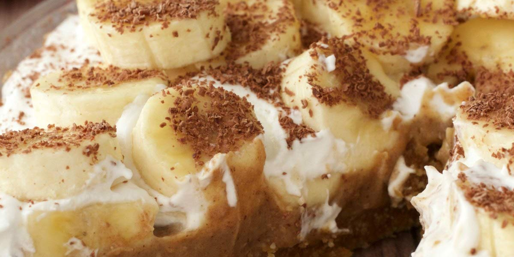

Banoffee Pie
Recipe Specification
Ingredients List
| Ingredients | Quantity |
|---|---|
| Unsalted Butter | 175g |
| Digestive Biscuits | 225g |
| Dark Brown Sugar | 75g |
| Condensed Milk | 1x400g |
| Bananas | 2x1 |
| Double Cream | 150ml |
| Lemon | 1x1 |
| Cocoa Powder | To Dust |
Yield: 8-10 portions
Preparation
- Line a 20cm spring form cake tin with grease proof paper.
- Melt 100g of unsalted butter in the microwave.
- Break digestive biscuits into crumb and mix with melted butter. Place mixture at the base and sides of cake tin, distribute evenly and compact down with the back of a spoon. The digestive crumb should run all the way up the sides of the tin and should resemble a crater. Place in the fridge for 1 hour
- Juice lemon.
- Peel and cut banana into 5mm diagonal slices before coating with lemon juice.
- Use an electric whisk to mix double cream so that it leaves a medium peak. Transfer cream to a piping bag and place in the refrigerator.
Cooking Instructions
- Place a sauce pan over e medium heat and add dark brown sugar and 75g of unsalted butter.
- Reduce heat to low and stir regularly. Once sugar has dissolved, add condensed milk and bring to the boil. Sustain the boil for 1 minute whilst stirring and once the caramel looks golden brown, remove from the heat.
- Take the digestive base out of the fridge and spread caramel evenly over it. Place in the fridge for 30 minutes.
- Remove from fridge and apply even layer of bananas and top with peaks of piped double cream.
- Finish by dusting with cocoa powder.
- Remove spring form ring and serve banoffee on base.

Serving Suggestions
Serve with a cup of tea.
Storing instructions
Cover with clingfilm and place in the fridge. Consume with 4 days of making.